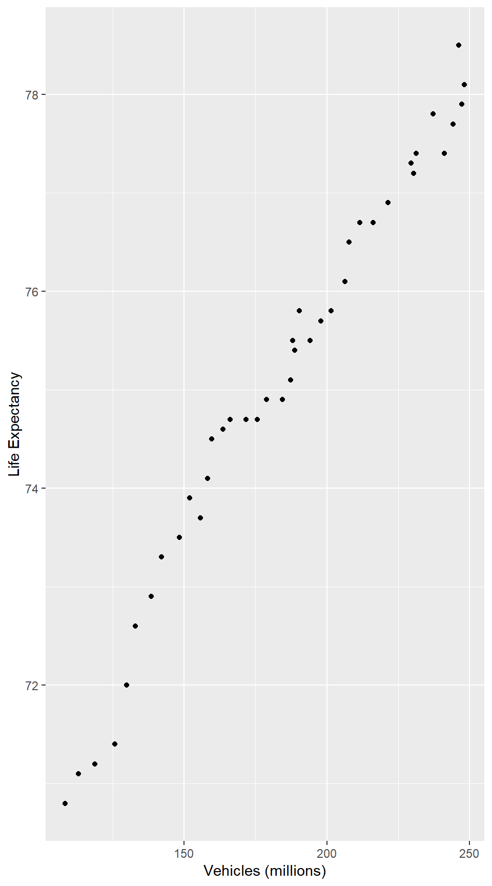

1 Collecting Data
1.1 The Structure of Data
Cases and Variables
Data sets in R are usually stored as data frames in a rectangular arrangement with rows corresponding to observational units and columns corresponding to variables. A number of data sets are built into (ref:R-package) and its packages. The package for our text is Lock5withR which comes with a number of data sets.
require(Lock5withR) # Tell R to use the package for our text book
require(mosaic) # Tell R to use the package for creating plots
data(StudentSurvey) # load the StudentSurvey data setImagine data as a 2-dimensional structure (like a spreadsheet).
- Rows correspond to observational units (people, animals, plants, or other objects we are collecting data about).
- Columns correspond to variables (measurements collected on each observational unit).
- At the intersection of a row and a column is the value of the variable for a particular observational unit.
Observational units go by many names, depending on the kind of thing being studied. Popular names include subjects, individuals, and cases. Whatever you call them, it is important that you always understand what your observational units are.
Let’s take a look at the data frame for the Student Survey example in the text. If we type the name of the data set, (ref:R-package) will display it in its entirety for us. However, StudentSurvey is a larger data set, so it is more useful to look at some sort of summary or subset of the data.
Table 1.1
head(StudentSurvey) # first six cases of the data set## Year Gender Smoke Award HigherSAT Exercise TV Height Weight
## 1 Senior M No Olympic Math 10 1 71 180
## 2 Sophomore F Yes Academy Math 4 7 66 120
## 3 FirstYear M No Nobel Math 14 5 72 208
## 4 Junior M No Nobel Math 3 1 63 110
## 5 Sophomore F No Nobel Verbal 3 3 65 150
## 6 Sophomore F No Nobel Verbal 5 4 65 114
## Siblings BirthOrder VerbalSAT MathSAT SAT GPA Pulse Piercings Sex
## 1 4 4 540 670 1210 3.13 54 0 Male
## 2 2 2 520 630 1150 2.50 66 3 Female
## 3 2 1 550 560 1110 2.55 130 0 Male
## 4 1 1 490 630 1120 3.10 78 0 Male
## 5 1 1 720 450 1170 2.70 40 6 Female
## 6 2 2 600 550 1150 3.20 80 4 FemaleWe can easily classify variables as either categorical or quantitative by studying the result of head(), but there are some summaries of the data set which reveal such information.
str(StudentSurvey) # structure of the data set## 'data.frame': 362 obs. of 18 variables:
## $ Year : Factor w/ 5 levels "","FirstYear",..: 4 5 2 3 5 5 2 5 3 2 ...
## $ Gender : Factor w/ 2 levels "F","M": 2 1 2 2 1 1 1 2 1 1 ...
## $ Smoke : Factor w/ 2 levels "No","Yes": 1 2 1 1 1 1 1 1 1 1 ...
## $ Award : Factor w/ 3 levels "Academy","Nobel",..: 3 1 2 2 2 2 3 3 2 2 ...
## $ HigherSAT : Factor w/ 3 levels "","Math","Verbal": 2 2 2 2 3 3 2 2 3 2 ...
## $ Exercise : num 10 4 14 3 3 5 10 13 3 12 ...
## $ TV : int 1 7 5 1 3 4 10 8 6 1 ...
## $ Height : int 71 66 72 63 65 65 66 74 61 60 ...
## $ Weight : int 180 120 208 110 150 114 128 235 NA 115 ...
## $ Siblings : int 4 2 2 1 1 2 1 1 2 7 ...
## $ BirthOrder: int 4 2 1 1 1 2 1 1 2 8 ...
## $ VerbalSAT : int 540 520 550 490 720 600 640 660 550 670 ...
## $ MathSAT : int 670 630 560 630 450 550 680 710 550 700 ...
## $ SAT : int 1210 1150 1110 1120 1170 1150 1320 1370 1100 1370 ...
## $ GPA : num 3.13 2.5 2.55 3.1 2.7 3.2 2.77 3.3 2.8 3.7 ...
## $ Pulse : int 54 66 130 78 40 80 94 77 60 94 ...
## $ Piercings : int 0 3 0 0 6 4 8 0 7 2 ...
## $ Sex : Factor w/ 2 levels "Female","Male": 2 1 2 2 1 1 1 2 1 1 ...summary(StudentSurvey) # summary of each variable## Year Gender Smoke Award HigherSAT
## : 2 F:169 No :319 Academy: 31 : 7
## FirstYear: 94 M:193 Yes: 43 Nobel :149 Math :205
## Junior : 35 Olympic:182 Verbal:150
## Senior : 36
## Sophomore:195
##
##
## Exercise TV Height Weight
## Min. : 0.000 Min. : 0.000 Min. :59.00 Min. : 95.0
## 1st Qu.: 5.000 1st Qu.: 3.000 1st Qu.:65.00 1st Qu.:138.0
## Median : 8.000 Median : 5.000 Median :68.00 Median :155.0
## Mean : 9.054 Mean : 6.504 Mean :68.42 Mean :159.8
## 3rd Qu.:12.000 3rd Qu.: 9.000 3rd Qu.:71.00 3rd Qu.:180.0
## Max. :40.000 Max. :40.000 Max. :83.00 Max. :275.0
## NA's :1 NA's :1 NA's :7 NA's :5
## Siblings BirthOrder VerbalSAT MathSAT
## Min. :0.000 Min. :1.00 Min. :390.0 Min. :400.0
## 1st Qu.:1.000 1st Qu.:1.00 1st Qu.:550.0 1st Qu.:560.0
## Median :1.000 Median :2.00 Median :600.0 Median :610.0
## Mean :1.727 Mean :1.83 Mean :594.2 Mean :609.4
## 3rd Qu.:2.000 3rd Qu.:2.00 3rd Qu.:640.0 3rd Qu.:650.0
## Max. :8.000 Max. :8.00 Max. :800.0 Max. :800.0
## NA's :3
## SAT GPA Pulse Piercings
## Min. : 800 Min. :2.000 Min. : 35.00 Min. : 0.000
## 1st Qu.:1130 1st Qu.:2.900 1st Qu.: 62.00 1st Qu.: 0.000
## Median :1200 Median :3.200 Median : 70.00 Median : 0.000
## Mean :1204 Mean :3.158 Mean : 69.57 Mean : 1.673
## 3rd Qu.:1270 3rd Qu.:3.400 3rd Qu.: 77.75 3rd Qu.: 3.000
## Max. :1550 Max. :4.000 Max. :130.00 Max. :10.000
## NA's :17 NA's :1
## Sex
## Female:169
## Male :193
##
##
##
##
## inspect(StudentSurvey) # summary of each variable##
## categorical variables:
## name class levels n missing
## 1 Year factor 5 362 0
## 2 Gender factor 2 362 0
## 3 Smoke factor 2 362 0
## 4 Award factor 3 362 0
## 5 HigherSAT factor 3 362 0
## 6 Sex factor 2 362 0
## distribution
## 1 Sophomore (53.9%), FirstYear (26%) ...
## 2 M (53.3%), F (46.7%)
## 3 No (88.1%), Yes (11.9%)
## 4 Olympic (50.3%), Nobel (41.2%) ...
## 5 Math (56.6%), Verbal (41.4%), (1.9%)
## 6 Male (53.3%), Female (46.7%)
##
## quantitative variables:
## name class min Q1 median Q3 max mean
## 1 Exercise numeric 0 5.0 8.0 12.00 40 9.054017
## 2 TV integer 0 3.0 5.0 9.00 40 6.504155
## 3 Height integer 59 65.0 68.0 71.00 83 68.422535
## 4 Weight integer 95 138.0 155.0 180.00 275 159.798319
## 5 Siblings integer 0 1.0 1.0 2.00 8 1.726519
## 6 BirthOrder integer 1 1.0 2.0 2.00 8 1.830084
## 7 VerbalSAT integer 390 550.0 600.0 640.00 800 594.190608
## 8 MathSAT integer 400 560.0 610.0 650.00 800 609.436464
## 9 SAT integer 800 1130.0 1200.0 1270.00 1550 1203.627072
## 10 GPA numeric 2 2.9 3.2 3.40 4 3.157942
## 11 Pulse integer 35 62.0 70.0 77.75 130 69.574586
## 12 Piercings integer 0 0.0 0.0 3.00 10 1.673130
## sd n missing
## 1 5.7407405 361 1
## 2 5.5837671 361 1
## 3 4.0785437 355 7
## 4 31.6194667 357 5
## 5 1.1791417 362 0
## 6 1.1244305 359 3
## 7 74.1763984 362 0
## 8 68.4900672 362 0
## 9 121.2852074 362 0
## 10 0.3983207 345 17
## 11 12.2051356 362 0
## 12 2.1727027 361 1Here are some more summaries:
nrow(StudentSurvey) # number of rows## [1] 362ncol(StudentSurvey) # number of columns## [1] 18dim(StudentSurvey) # number of rows and columns## [1] 362 18Many of the datasets in R have useful help files that describe the data and explain how they were collected or give references to the original studies. You can access this information for the StudentSurvey data set by typing
?StudentSurveyWe’ll learn how to make more customized summaries (numerical and graphical) soon. For now, it is only important to observe how the organization of data in R reflects the observational units and variables in the data set.
This is important if you want to construct your own data set (in Excel or a google spreadhseet, for example) that you will later import into R You want to be sure that the structure of your spread sheet uses rows and columns in this same way, and that you don’t put any extra stuff into the spread sheet. It is a good idea to include an extra row at the top which names the variables. Take a look at Chapter 0 to learn how to get the data from Excel into R.
Categorical and Quantitative Variables
categorical variable a variable that places observational units into one of two or more categories (examples: color, sex, case/control status, species, etc.)
These can be further sub-divided into ordinal and nominal variables. If the categories have a natural and meaningful order, we will call them ordered or ordinal variables. Otherwise, they are nominal variables.
quantitative variable a variable that records measurements along some scale (examples: weight, height, age, temperature) or counts something (examples: number of siblings, number of colonies of bacteria, etc.)
Quantitative variables can be continuous or discrete. Continuous variables can (in principle) take on any real-number value in some range. Values of discrete variables are limited to some list and “in-between values” are not possible. Counts are a good example of discrete variables.
Investigating Variables and Relationships between Variables
head(AllCountries)## Country Code LandArea Population Energy Rural Military Health HIV
## 1 Afghanistan AFG 652230 29.021 NA 76.0 4.4 3.7 NA
## 2 Albania ALB 27400 3.143 2088 53.3 NA 8.2 NA
## 3 Algeria ALG 2381740 34.373 37069 34.8 13.0 10.6 0.1
## 4 American Samoa ASA 200 0.066 NA 7.7 NA NA NA
## 5 Andorra AND 470 0.084 NA 11.1 NA 21.3 NA
## 6 Angola ANG 1246700 18.021 10972 43.3 NA 6.8 2.0
## Internet Developed BirthRate ElderlyPop LifeExpectancy CO2
## 1 1.7 NA 46.5 2.2 43.9 0.02503483
## 2 23.9 1 14.6 9.3 76.6 1.31285501
## 3 10.2 1 20.8 4.6 72.4 3.23296040
## 4 NA NA NA NA NA NA
## 5 70.5 NA 10.4 NA NA 6.52783463
## 6 3.1 1 42.9 2.5 47.0 1.35108829
## GDP Cell Electricity kwhPerCap
## 1 501.4709 37.80711 NA <NA>
## 2 3678.2317 141.92896 1747.0980 Under 2500
## 3 4494.8867 92.42126 970.9825 Under 2500
## 4 NA NA NA <NA>
## 5 NA 77.17642 NA <NA>
## 6 4422.5428 46.68924 202.1545 Under 2500inspect(AllCountries)##
## categorical variables:
## name class levels n missing
## 1 Country factor 213 213 0
## 2 Code factor 211 213 0
## 3 kwhPerCap ordered 3 135 78
## distribution
## 1 Afghanistan (0.5%), Albania (0.5%) ...
## 2 (1.4%), AFG (0.5%), ALB (0.5%) ...
## 3 Under 2500 (54.1%), Over 5000 (30.4%) ...
##
## quantitative variables:
## name class min Q1 median
## 1 LandArea integer 2.00000000 1.083000e+04 94080.000000
## 2 Population numeric 0.02000000 7.727500e-01 5.613500
## 3 Energy integer 159.00000000 5.251750e+03 17478.000000
## 4 Rural numeric 0.00000000 2.290000e+01 40.400000
## 5 Military numeric 0.00000000 3.800000e+00 5.850000
## 6 Health numeric 0.70000000 8.000000e+00 11.300000
## 7 HIV numeric 0.10000000 1.000000e-01 0.400000
## 8 Internet numeric 0.20000000 5.650000e+00 22.800000
## 9 Developed integer 1.00000000 1.000000e+00 1.000000
## 10 BirthRate numeric 8.20000000 1.210000e+01 19.400000
## 11 ElderlyPop numeric 1.00000000 3.400000e+00 5.400000
## 12 LifeExpectancy numeric 43.90000000 6.280000e+01 71.900000
## 13 CO2 numeric 0.02262046 6.176463e-01 2.736944
## 14 GDP numeric 192.12381400 1.252696e+03 4408.837950
## 15 Cell numeric 1.23845433 5.920582e+01 93.695810
## 16 Electricity numeric 35.68444850 8.003194e+02 2237.508632
## Q3 max mean sd n missing
## 1 4.463000e+05 1.637687e+07 6.081201e+05 1.766860e+06 213 0
## 2 2.058350e+01 1.324655e+03 3.148489e+01 1.242709e+02 212 1
## 3 5.248550e+04 2.283722e+06 8.631240e+04 2.797468e+05 136 77
## 4 6.320000e+01 8.960000e+01 4.213380e+01 2.438970e+01 213 0
## 5 1.217500e+01 2.930000e+01 8.276531e+00 6.143000e+00 98 115
## 6 1.445000e+01 2.610000e+01 1.122460e+01 4.366174e+00 187 26
## 7 1.300000e+00 2.590000e+01 1.977241e+00 4.441186e+00 145 68
## 8 4.815000e+01 9.050000e+01 2.896281e+01 2.630818e+01 199 14
## 9 3.000000e+00 3.000000e+00 1.762963e+00 8.911456e-01 135 78
## 10 2.890000e+01 5.350000e+01 2.202234e+01 1.070333e+01 197 16
## 11 1.160000e+01 2.140000e+01 7.473298e+00 5.071683e+00 191 22
## 12 7.602500e+01 8.280000e+01 6.894286e+01 1.024365e+01 196 17
## 13 7.016559e+00 4.905058e+01 5.085573e+00 6.726036e+00 198 15
## 14 1.243103e+04 1.054377e+05 1.129842e+04 1.675920e+04 173 40
## 15 1.211598e+02 2.064285e+02 9.109300e+01 4.484740e+01 201 12
## 16 5.824237e+03 5.125919e+04 4.109127e+03 5.826901e+03 135 78AllCountries[86, ]## Country Code LandArea Population Energy Rural Military Health HIV
## 86 Iceland ISL 100250 0.317 5255 7.7 0.1 13.1 0.3
## Internet Developed BirthRate ElderlyPop LifeExpectancy CO2
## 86 90.5 3 15.2 11.7 81.3 7.024063
## GDP Cell Electricity kwhPerCap
## 86 39616.84 109.662 51259.19 Over 5000Using Data to Answer a Question
- response variable a variable we are trying to predict or explain
- explanatory variable a variable used to predict or explain a response variable
1.2 Sampling from a Population
Samples from Populations
- population the collection of animals, plants, objects, etc. that we want to know about
- sample the (smaller) set of animals, plants, objects, etc. about which we have data
- parameter a number that describes a population or model.
- statistic a number that describes a sample.
Much of statistics centers around this question:
What can we learn about a population from a sample?
Sampling Bias
Often we are interested in knowing (approximately) the value of some parameter. A statistic used for this purpose is called an estimate. For example, if you want to know the mean length of the tails of lemurs (that’s a parameter), you might take a sample of lemurs and measure their tails. The mean length of the tails of the lemurs in your sample is a statistic. It is also an estimate, because we use it to estimate the parameter.
Statistical estimation methods attempt to
- reduce bias, and
- increase precision.
- bias the systematic tendency of sample estimates to either overestimate or underestimate population parameters; that is, a systematic tendency to be off in a particular direction.
- precision the measure of how close estimates are to the thing being estimated (called the estimand).
Simple Random Sample
Sampling is the process of selecting a sample. Statisticians use random samples
- to avoid (or at least reduce) bias, and
- so they can quantify sampling variability (the amount samples differ from each other), which in turn allows us to quantify precision.
The simplest kind of random sample is called a simple random sample (aren’t statisticians clever about naming things?). A simple random sample is equivalent to putting all individuals in the population into a big hat, mixing thoroughly, and selecting some out of the hat to be in the sample. In particular, in a simple random sample, every individual has an equal chance to be in the sample, in fact, every subset of the population of a fixed size has an equal chance to be in the sample.
Other sampling methods include
- convenience sampling using whatever individuals are easy to obtain
This is usually a terrible idea. If the convenient members of the population differ from the inconvenient members, then the sample will not be representative of the population.
- volunteer sampling using people who volunteer to be in the sample
This is usually a terrible idea. Most likely the volunteers will differ in some ways from the non-volunteers, so again the sample will not be representative of the population.
- systematic sampling sampling done in some systematic way (every tenth unit, for example).
This can sometimes be a reasonable approach.
- stratified sampling sampling separately in distinct sub-populations (called strata)
This is more complicated (and sometimes necessary) but fine as long as the sampling methods in each stratum are good and the analysis takes the sampling method into account.
Example 1.15
sample(AllCountries, 5)## Country Code LandArea Population Energy Rural Military Health
## 211 Yemen, Rep. YEM 527970 22.917 7478 69.4 NA 4.3
## 168 Seychelles SEY 460 0.087 NA 45.7 3.1 10.1
## 2 Albania ALB 27400 3.143 2088 53.3 NA 8.2
## 123 Marshall Islands MHL 180 0.060 NA 28.9 NA 14.6
## 68 Gabon GAB 257670 1.448 2073 15.0 NA 6.6
## HIV Internet Developed BirthRate ElderlyPop LifeExpectancy CO2
## 211 NA 1.6 1 36.8 2.4 62.9 1.033494
## 168 NA 39.0 NA 17.8 NA 73.2 7.843760
## 2 NA 23.9 1 14.6 9.3 76.6 1.312855
## 123 NA 3.7 NA NA NA NA 1.872334
## 68 5.3 6.2 1 27.3 4.3 60.4 1.704158
## GDP Cell Electricity kwhPerCap orig.id
## 211 NA 46.086659 218.8337 Under 2500 211
## 168 10824.724 135.899451 NA <NA> 168
## 2 3678.232 141.928961 1747.0980 Under 2500 2
## 123 3015.209 7.032089 NA <NA> 123
## 68 8642.804 106.943844 922.4955 Under 2500 681.3 Experiments and Observational Studies
Confounding Variables
Table 1.2
head(LifeExpectancyVehicles, 10)## Year LifeExpectancy Vehicles
## 1 1970 70.8 108.4
## 2 1971 71.1 113.0
## 3 1972 71.2 118.8
## 4 1973 71.4 125.7
## 5 1974 72.0 129.9
## 6 1975 72.6 132.9
## 7 1976 72.9 138.5
## 8 1977 73.3 142.1
## 9 1978 73.5 148.4
## 10 1979 73.9 151.9Sub <- filter(LifeExpectancyVehicles, Year %% 4==2)
Sub## Year LifeExpectancy Vehicles
## 1 1970 70.8 108.4
## 2 1974 72.0 129.9
## 3 1978 73.5 148.4
## 4 1982 74.5 159.6
## 5 1986 74.7 175.7
## 6 1990 75.4 188.8
## 7 1994 75.7 198.0
## 8 1998 76.7 211.6
## 9 2002 77.3 229.6
## 10 2006 77.7 244.2Figure 1.2
gf_point(LifeExpectancy ~ Vehicles, xlab = "Vehicles (millions)", ylab = "Life Expectancy",
data = LifeExpectancyVehicles)
Observational Studies vs. Experiments
Statisticians use the word experiment to mean something very specific. In an experiment, the researcher determines the values of one or more (explanatory) variables, typically by random assignment. If there is no such assignment by the researcher, the study is an observational study.